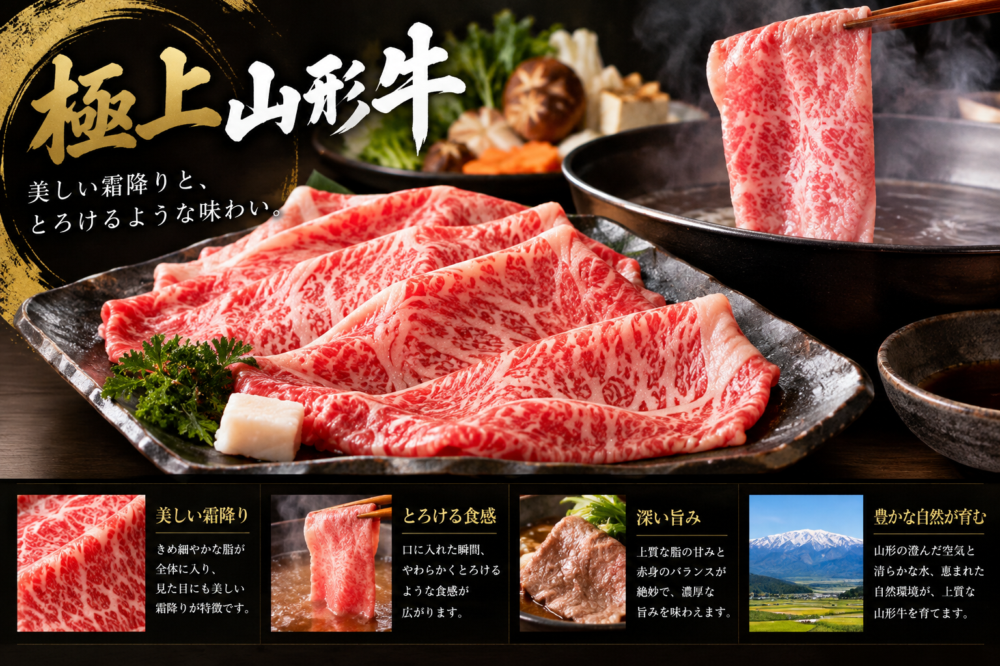
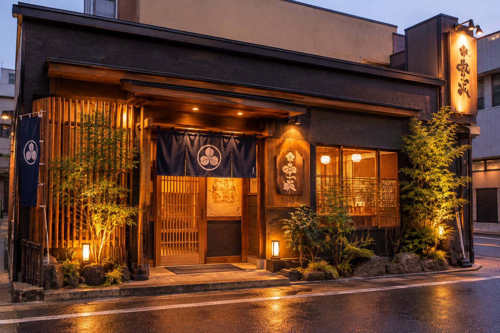
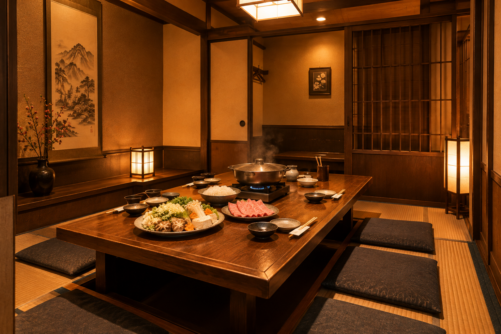

A-5RANK
POINT 01
特上米沢牛の
しゃぶしゃぶ・すき焼き
A-5ランクの米沢牛を使用。公式サイトでは「特上米沢牛」として案内されています。
山形を代表するブランド牛を、しゃぶしゃぶとすき焼きで味わえます。

しゃぶしゃぶ・すき焼き専門店
A-5ランクの米沢牛、山形牛。庄内豚も。
しゃぶしゃぶとすき焼きで味わう、山形の肉。
広々とした座敷と個室で、お祝いや会食に。
山形駅東口から徒歩圏内、ターミナルプラザビル1階。
しゃぶしゃぶとすき焼きを専門に、山形の肉を提供しています。
山形を代表するブランド牛、A-5ランクの米沢牛と山形牛。
牛肉のほかに、庄内豚や米の娘ぶたのしゃぶしゃぶもご用意しています。
広々とした座敷で、ご家族のお祝いやグループの会食を。
米沢牛は「特上」、山形牛は「極上」として案内。山形を代表する味を。
専門店ならではの二本立て。牛肉のほか、庄内豚・米の娘ぶたも選べます。
座敷のほか、6〜30名で利用可能とされる完全個室もあります。
山形が誇る2つのブランド牛と、店主自慢の水餃子。
しゃぶ専ならではの3つの魅力をご紹介します。
A-5ランクの米沢牛を使用。公式サイトでは「特上米沢牛」として案内されています。
山形を代表するブランド牛を、しゃぶしゃぶとすき焼きで味わえます。

A-5ランクの山形牛を使用。公式サイトでは「極上山形牛」として案内されています。
牛肉のほかに、庄内豚・米の娘ぶたのしゃぶしゃぶも選べます。
しゃぶしゃぶ・すき焼きの専門店でありながら、店主自慢の水餃子もおすすめメニューとして紹介されています。
お肉と一緒に楽しめる一品です。
お祝いの席から、出張の夜まで。
こんな時にご利用ください。
ご家族の祝い事や記念日のお食事に。広々とした座敷でお過ごしいただけます。
6〜30名で利用可能とされる完全個室の情報があります。詳細はお問い合わせください。
JR山形駅東口から徒歩約4〜6分。駅から近く、立ち寄りやすい立地です。
通常のランチ営業はありませんが、事前のご予約で昼営業に対応します。
ターミナルプラザビル1階の店舗と、
鍋を囲む広々とした座敷席。


山形市香澄町、JR山形駅東口から徒歩約4〜6分。
夜の営業、ご予約をおすすめします。
ご予算・コース料金、駐車場の有無、お支払い方法（カード・電子マネー・QRコード決済）、禁煙・喫煙、テイクアウトの可否については、確認できておりません。ご予約時に店舗へお問い合わせください。
A-5ランクの米沢牛、山形牛を、しゃぶしゃぶとすき焼きで。
ご家族のお祝いにも、会食にも。
ご予約をお待ちしております。
※営業時間: 月〜土17:00〜23:00／日曜17:00〜22:30（詳細は店舗へご確認ください）
※定休日: 不定休（2か月に1回程度）
※電話予約は15:00から／昼のご利用は事前予約で対応